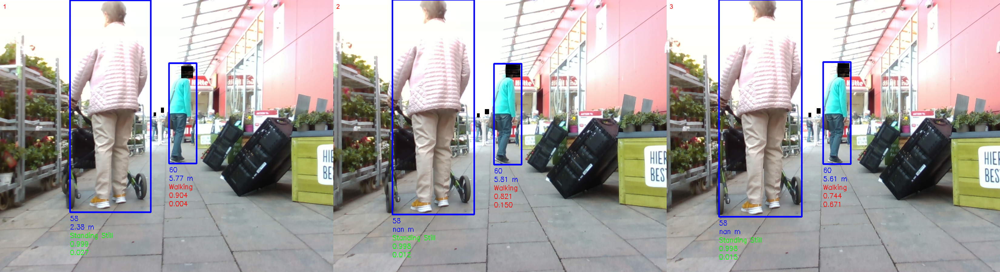
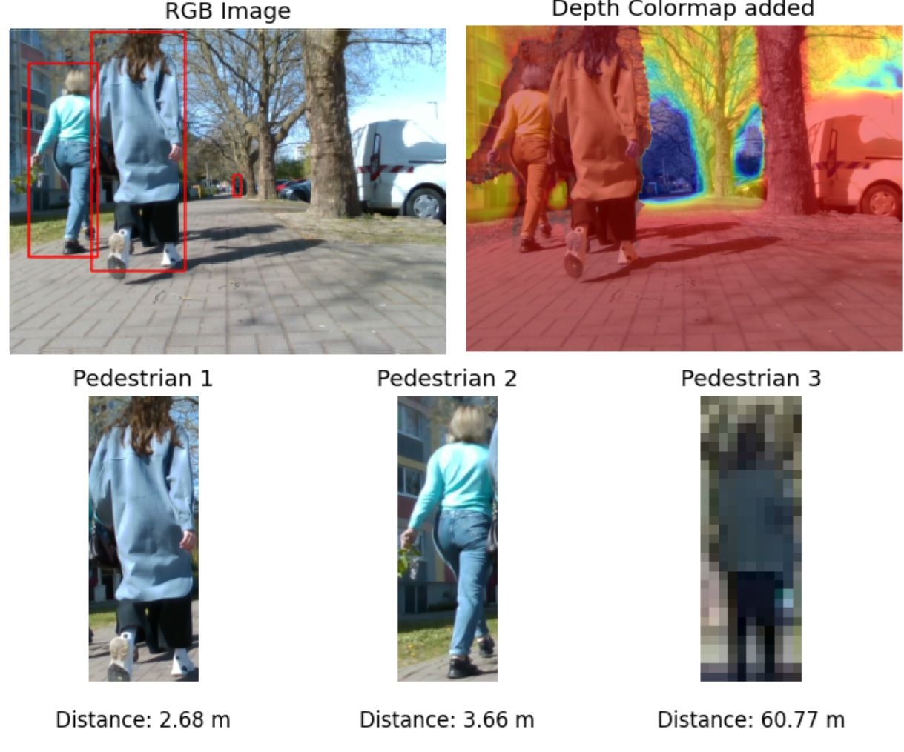
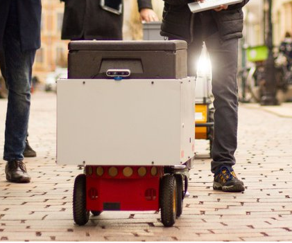
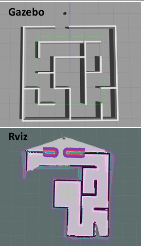
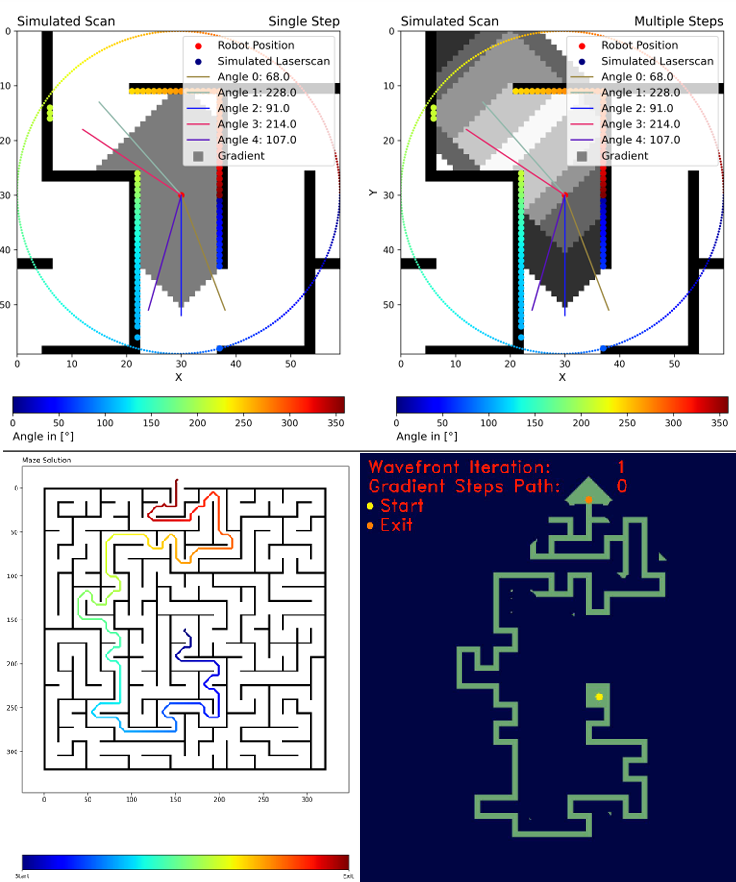
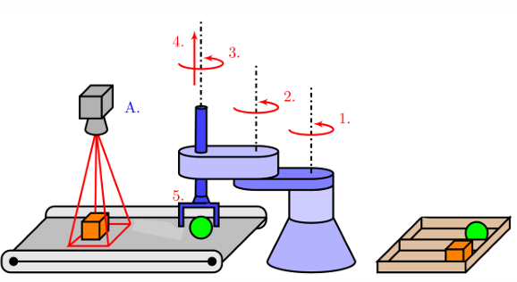
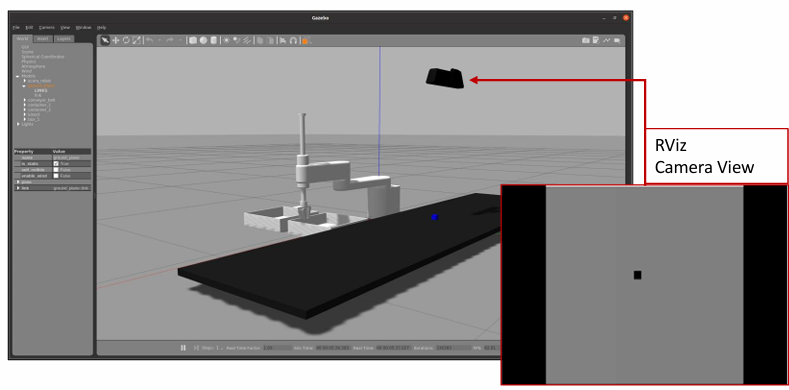
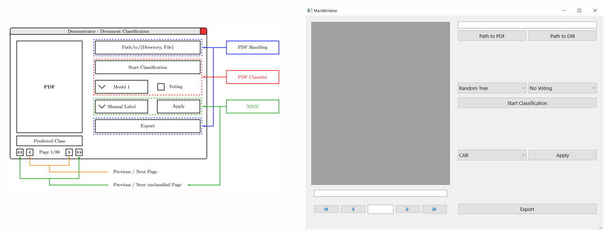
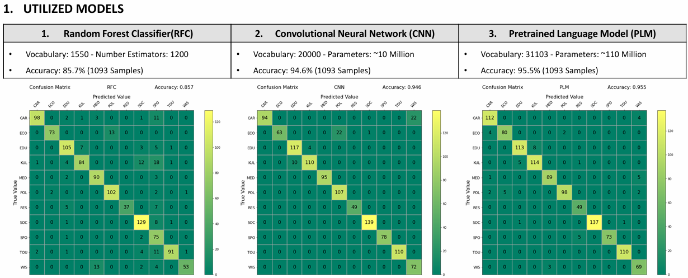

Autonomes Fahren
Computer Vision, Sensorfusion, Lokalisierung, Pfadplanung, Verhaltensplanung, Trajektoriengenerierung, Regelung und ROS-basierte Systemintegration.
Autonomes Fahren · Robotik · KI · Mechatronik
Ingenieurprojekte von der Mechatronik im Bachelorstudium bis zur Forschung an autonomen Systemen
Mein Projektweg umfasst mechatronische Systementwicklung, industrielle Automatisierung, Embedded Control, Software für autonomes Fahren, Computer Vision, ROS-basierte Robotik und menschzentrierte Entscheidungsfindung für autonome Systeme.
Technisches Portfolio
Die Projekte reichen von physischer Automatisierung und Embedded-Prototypen bis zu Wahrnehmung, Planung, Forschungssoftware und simulierten Robotersystemen.
Ausgewählte Bilder geben einen kompakten visuellen Überblick. Jedes Bild kann in voller Auflösung geöffnet werden; die verlinkten GitHub-Repositories enthalten die ausführlichere technische Dokumentation.
Computer Vision, Sensorfusion, Lokalisierung, Pfadplanung, Verhaltensplanung, Trajektoriengenerierung, Regelung und ROS-basierte Systemintegration.
ROS/ROS2, TurtleBot3, Gazebo, Graph-SLAM-Schnittstellen, robotische Manipulation, Simulation, Tests und CI/CD-Abläufe.
CNNs, OpenCV, Aktionserkennung, Intentionserkennung, OCR, BERT, Klassifikation und visuelle Inspektion.
Arduino, ESP32, PID-Regelung, GNSS, LTE-M, CAN/DBC, SPS, Pneumatik, Stateflow, SolidWorks und LabVIEW.
Ausgewähltes Forschungsprojekt · August 2024–Februar 2025
Masterarbeit zur Fußgängerwahrnehmung und kurzfristigen Intentionserkennung als Grundlage für sicherere Entscheidungen in einem autonomen Lieferroboterszenario.
Problem und Zielsetzung
Autonome Lieferroboter bewegen sich in unmittelbarer Nähe verletzlicher Verkehrsteilnehmer und müssen sicher auf Änderungen im Fußgängerverhalten reagieren.
Ich entwickelte eine Wahrnehmungs- und Prädiktionspipeline, die Fußgänger erkannte und verfolgte, ihre aktuelle Handlung klassifizierte und abschätzte, ob sich ihr Bewegungszustand wahrscheinlich ändern würde.
Wahrnehmungspipeline
Deep-Learning-Modelle
Anwendung und Meilensteine
Das vorhergesagte Verhalten sollte vorausschauendere und risikobewusstere Pfadplanungsentscheidungen in der Nähe von Fußgängern unterstützen.
Visuelle Projektnachweise
Die Bilder zeigen den Anwendungskontext des Lieferroboters, die tiefenbasierte Fußgängerwahrnehmung und ein zeitliches Beispiel, bei dem die Wahrscheinlichkeit einer Zustandsänderung eines gehenden Fußgängers steigt, bevor sich die Klassifikation der aktuellen Handlung vollständig ändert.



Tiefenkamera · GPS · Odometrie · I3D · LSTM · MLP · Deep Learning · Mensch-Roboter-Interaktion
Ausgewähltes Robotikprojekt · März 2023–Juli 2023
Ein Gruppenprojekt aus dem ROS-Wahlfach, das später weiterentwickelt und als peer-reviewter CoDIT-2024-Beitrag veröffentlicht wurde.
Umsetzung
Ergebnis
Das ursprüngliche Kursprojekt wurde weiterentwickelt und als Konferenzbeitrag dokumentiert, der über IEEE Xplore veröffentlicht wurde.
Die Arbeit vertiefte meine Erfahrung in kollaborativer Robotikentwicklung, Simulation und technischer Publikation.
Simulations- und Planungsergebnisse
Das Projekt kombinierte ROS-basierte Simulation und Belegungskartenerstellung mit globaler Wavefront-Planung und lokalen Bewegungsentscheidungen.


Ausgewählter Forschungssoftwarebeitrag · April 2024–September 2024
Internationale Forschungszusammenarbeit zur Unterstützung eines modularen Graph-SLAM-Frameworks, das von mehreren Forschenden und Studierenden entwickelt wurde.
Persönlicher Beitrag
Softwareentwicklungsablauf
Self-Driving Car Engineer Nanodegree · Juli 2020–Januar 2021
Der Udacity Nanodegree war meine erste strukturierte Spezialisierung auf autonome Fahrzeuge. In der Regel schloss ich ein bis zwei Projektabgaben pro Monat ab und arbeitete in den Bereichen Wahrnehmung, Lokalisierung, Planung und Regelung.
Computer Vision
Entwicklung einer grundlegenden Computer-Vision-Pipeline zur Erkennung von Fahrspurbegrenzungen in Straßenbildern und Videos mithilfe von Bildverarbeitungstechniken.
Python · OpenCV · Bildverarbeitung
Fortgeschrittene Computer Vision
Entwicklung eines robusten Fahrspurerkennungssystems mit Kamerakalibrierung, Verzeichnungskorrektur, Gradienten- und Farbschwellenwerten, Perspektivtransformation und Krümmungsschätzung.
Python · OpenCV · Kalibrierung · Perspektivtransformation
Deep Learning
Training und Bewertung eines Convolutional Neural Network zur Klassifikation von Verkehrszeichen aus Bilddatensätzen für die Wahrnehmung autonomer Fahrzeuge.
Python · TensorFlow · Keras · CNN
End-to-End Learning
Entwicklung eines End-to-End-Deep-Learning-Modells, das Lenkbefehle direkt aus Kamerabildern in einer simulierten Fahrumgebung vorhersagte.
Python · TensorFlow · Keras · Computer Vision
Sensorfusion
Implementierung der Radar- und LiDAR-Sensorfusion mit einem Extended Kalman Filter zur nichtlinearen Zustandsabschätzung und Bewegungsverfolgung.
C++ · Radar · LiDAR · EKF
Lokalisierung
Anwendung eines Partikelfilters zur probabilistischen Fahrzeuglokalisierung anhand verrauschter Beobachtungen und bekannter Kartenlandmarken.
C++ · Partikelfilter · Probabilistische Lokalisierung
Planung
Entwicklung eines Autobahn-Pfadplanungssystems mit Spurhaltung, sicheren Spurwechseln, Geschwindigkeitsregelung und Kollisionsvermeidung.
C++ · Pfadplanung · Trajektoriengenerierung
Fahrzeugregelung
Abstimmung eines PID-basierten Lenkreglers zur Minimierung des Querfehlers und Verbesserung der Fahrzeugstabilität in der Simulation.
C++ · PID-Regelung · Fahrzeugdynamik
Internationales Abschluss-Teamprojekt
Zusammenarbeit mit drei Ingenieuren aus verschiedenen Ländern zur Integration von Wahrnehmungs-, Planungs- und Regelungskomponenten in einen ROS-basierten Software-Stack für autonome Fahrzeuge.
ROS · Python · Wahrnehmung · Planung · Regelung
Persönliche Weiterentwicklung und aktuelle Arbeit
Dieser Abschnitt zeigt laufende technische Weiterentwicklung und Projektsammlungen, die mein Programmier- und Automotive-Profil stärken.
Python-Praxis · Projektsammlung
Eine Sammlung kleinerer Anwendungen und Übungen aus einem strukturierten 100-Tage-Python-Lernprogramm.
Die Repositories dokumentieren kontinuierliche Praxis mit Python-Grundlagen, Skripting, Problemlösung und Anwendungsentwicklung.
Python · Skripting · Übungsprojekte · Kontinuierliches Lernen
In Arbeit · Automotive Software
Ich entwickle ein Open-Source-Projekt zur Automotive-Kommunikation, um meine praktischen Kenntnisse in CAN, DBC-basierten Signaldefinitionen und softwaregestützter Verifikation zu vertiefen.
Geplant sind virtuelle CAN-Kommunikation, Nachrichtenkodierung und -dekodierung, DBC-Parsing, Signalüberwachung, automatisierte Testfälle, Logging und klare technische Dokumentation.
In Arbeit · Python · python-can · cantools · DBC · Pytest
Master-Fallstudien · März 2023–Juli 2023
Diese Teamprojekte kombinierten Simulation, Wahrnehmung, Machine Learning und benutzerorientierte Software.
Autonome Robotik · Teamprojekt
Entwicklung eines SCARA-basierten Systems zur Sortierung sphärischer und kubischer Objekte. Das Team wählte die SCARA-Konfiguration, weil sie einfacher in SolidWorks zu modellieren und nach Gazebo zu exportieren war.
Der Roboter wurde vollständig in Python implementiert; XML wurde für Elemente des Robotermodells verwendet. Hinzu kamen kamerabasierte Objekterkennung und Trajektorienberechnung.
Python · XML · SolidWorks · Gazebo · Computer Vision
Computer Vision · CNN · Teamprojekt
Entwicklung eines Python-Computer-Vision-Systems für in Deutschland übliche Getränkekisten. Ein vom Team trainiertes CNN klassifizierte jede Position als volle Flasche, leere Flasche oder leerer Platz.
Ich wendete Kenntnisse in Kamerakalibrierung und Bildverarbeitung aus dem Self-Driving Car Nanodegree an.
Python · OpenCV · CNN · Kamerakalibrierung
NLP · Internationales Teamprojekt
Entwicklung eines Demonstrators mit drei weiteren Studierenden zur Klassifikation deutscher Zeitungsartikel aus PDF-Dateien.
Das System kombinierte PDF-Textextraktion, OCR, Random Forest, CNN und ein vortrainiertes German-BERT-Modell mit einer Tkinter-Oberfläche zur Datei- und Modellauswahl. Das Projekt wurde später von einem anderen Studierenden zu einer Masterarbeit weiterentwickelt.
Python · OCR · Random Forest · CNN · BERT · Tkinter
Entwurf und Simulation
Die Bilder zeigen die Entwicklung vom anfänglichen Sortiersystemkonzept bis zur integrierten Gazebo-Simulation.


Anwendung und Bewertung
Das Projekt kombinierte eine nutzbare Tkinter-Anwendung mit dem quantitativen Vergleich dreier Klassifikationsansätze.


Embedded Systems, Regelung und Qualität
Diese Projekte verbinden Embedded-Entwicklung und Regelungstechnik mit Automotive-Sensorik und Fertigungsqualität.
Einzelprojekt · Oktober 2022–Februar 2023
Eigenständige Entwicklung eines Embedded-Prototyps zur Erkennung starker Fahrzeugvibrationen, die mit beschädigten Straßenoberflächen verbunden sind.
Das System nutzte Arduino UNO, ADXL337-Beschleunigungssensor und SIM7000-Modul zur Erfassung von Ereignissen, Zeit und GNSS-Position. LTE-M- und AT-Befehl-Kommunikation wurden vorbereitet; die serverseitige Integration wurde innerhalb des Projekts nicht abgeschlossen.
Arduino UNO · ADXL337 · SIM7000 · GNSS · LTE-M
Teamprojekt · Oktober 2022–Februar 2023
Implementierung und Abstimmung einer PID-basierten Regelung eines Gleichstrommotors mit einem ESP32.
Die Fallstudie vertiefte praktische Kenntnisse in Embedded Control und zeigte, wie unterschiedliche PID-Abstimmungsverfahren das Systemverhalten beeinflussen.
ESP32 · PID-Regelung · Gleichstrommotor · Embedded Control
Praktikumsprojekt · August 2017–Oktober 2017
Unterstützung bei der Entwicklung eines Systems, das ein Radio so lange verriegelte, bis die korrekte Anzahl an Schrauben ordnungsgemäß angezogen war.
Eine nicht korrekt angezogene Schraube erhöhte den Zähler nicht, und das Radio wurde nicht freigegeben. Ich ergänzte das bestehende Andon-System um eine kleine LabVIEW-Visualisierung, die anzeigte, wie viele Radios den neuen Prüfpunkt erfolgreich passiert hatten.
LabVIEW · Andon · Qualitätskontrolle · Montageprüfung
Ingenieurprojekte im Bachelor
Diese Projekte bildeten meine Grundlage in vollständiger mechatronischer Systementwicklung, industrieller Automatisierung, Robotik und Computer Vision.
Umfassende Abschlussprüfung · September 2018
Entwurf eines vollständigen mechatronischen Systems, das Boxen abhängig von ihrer erkannten Farbe von einer Übergabestelle zum Lager transportierte.
Das einwöchige Prüfungsprojekt umfasste Sensor- und Aktorauswahl, Auswahl des Fördersystems, Ablaufsteuerung mit MATLAB Stateflow, Pneumatiklogik mit FluidSIM, Elektroniklogik mit Proteus, ein vollständiges SolidWorks-Modell, Kostenanalyse und ROI-Abschätzung.
Stateflow · FluidSIM · Proteus · SolidWorks · Pneumatik
Robotik · Oktober 2017–Februar 2018
Entwicklung eines automatisierten Fahrzeugs, das mit einer PS3-Kamera Richtungspfeile erkannte und in Bewegungsbefehle umsetzte.
Rechts- und Linkspfeile lösten entsprechende Kurven aus, ein Aufwärtspfeil bedeutete Geradeausfahrt und ein Abwärtspfeil Stopp.
PS3-Kamera · Bildverarbeitung · Mobile Robotik
INCISCOS 2017 · April 2017–August 2017
Entwicklung eines einfachen Linienfolger-Fahrzeugs für die internationale Konferenz INCISCOS 2017 an der UTE Universität.
Meine Teilnahmebescheinigung ist auf den 23.–25. November 2017 datiert. Zusätzlich nahm ich an Workshops zu MATLAB/iOS-Aktorsteuerung sowie HMI/SCADA-Systemen mit LabVIEW teil.
Mobile Robotik · Sensoren · Regelung · INCISCOS 2017
Systems Engineering · Oktober 2017–Februar 2018
Entwurf eines konzeptionellen mechatronischen Getränkeliefersystems, inspiriert von japanischen Kaiten-Sushi-Restaurants.
Das theoretische Projekt nutzte SysML, das V-Modell, Anforderungsanalyse, Systemarchitektur sowie Sensor- und Aktorauswahl. Es handelte sich um ein Systemkonzept, nicht um einen aufgebauten Prototyp.
SysML · V-Modell · Anforderungen · Systemarchitektur
Industrielle Automatisierung · Oktober 2017–Februar 2018
Gruppenprojekt zur Automatisierung einer FESTO-Trainingsstation mit Siemens S7 und TIA Portal.
Das Projekt umfasste Aktorsequenzen und koordinatenbasierte Bewegungssequenzen eines Roboterarms. Die genaue Programmiermethode des Arms wird bewusst nicht genannt, da sie noch nicht verifiziert wurde.
Siemens S7 · TIA Portal · SPS · Aktorsequenzen
Ingenieuransatz
Die Technologien veränderten sich im Laufe der Zeit, doch der zugrunde liegende Prozess blieb gleich: Problem verstehen, geeigneten Ansatz auswählen, System integrieren, Ergebnis testen und Grenzen dokumentieren.
Übertragung praktischer, wissenschaftlicher oder nutzerbezogener Anforderungen in technische Ziele, Anforderungen und messbares Systemverhalten.
Verbindung von Software, Sensoren, Aktoren, Modellen, robotischen Plattformen, Kommunikationsmodulen und Datenpipelines.
Entwicklung mit Python, C++, ROS/ROS2, Mikrocontrollern, Simulationswerkzeugen und Machine-Learning-Frameworks, unterstützt durch Tests und Validierung.
Dokumentation von Teamkontext, persönlichem Beitrag, erreichten Ergebnissen, unvollständigen Komponenten und technischen Grenzen, ohne die Arbeit zu übertreiben.
Weiter entdecken
Dieses Portfolio wird durch Berufserfahrung in Automobilproduktion und Qualität, Elektronik- und Robotiklaboren, ROS2-Forschungssoftware und internationaler technischer Zusammenarbeit ergänzt.